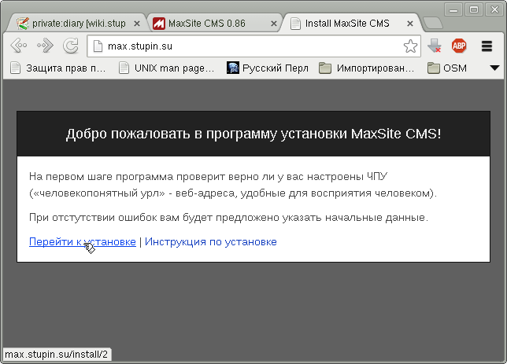
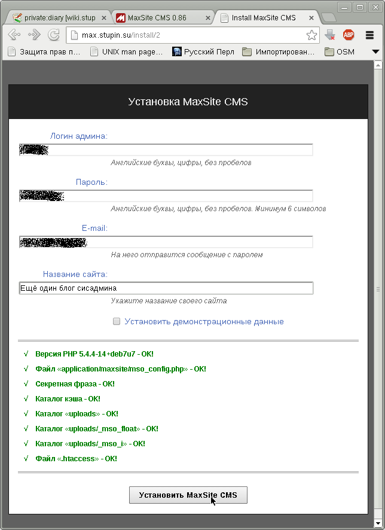
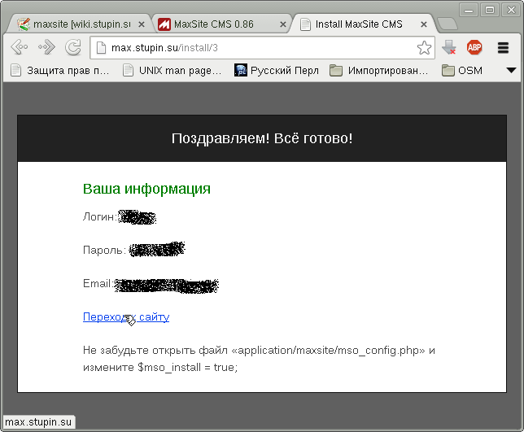
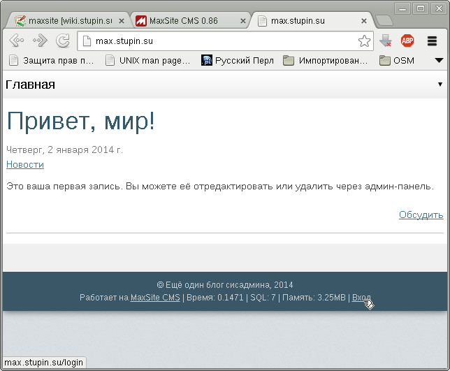

Одними из самых популярных систем управления наполнением сайтов являются Wordpress, Drupal и Joomla! Однако, хочется отметить отечественную разработку - MaxSite, за автором некоего Максима, фамилию которого я так и не смог нагуглить :) Из достоинств системы я отмечу использование фреймворка CodeIgniter, простоту настройки, нетребовательность к ресурсам.
В этой заметке я рассмотрю процесс установки MaxSite для совместной работы с веб-сервером Lighttpd.
Если в системе ещё не установлен MySQL, его сервер и клиент можно установить при помощи команды:
# apt-get install mysql-server mysql-client
Первым делом мы создадим для сайта пустую базу данных в MySQL:
CREATE DATABASE maxsite CHARSET UTF8;
INSERT INTO user(user, host, password) VALUES('maxsite', 'localhost', PASSWORD('maxsite_password'));
FLUSH PRIVILEGES;
GRANT ALL ON maxsite.* TO 'maxsite'@'localhost';
FLUSH PRIVILEGES;
Для генерации реального пароля я обычно пользуюсь программой pwgen из одноимённого пакета. Если пароль будет использоваться какой-то программой и его не нужно будет вводить руками, обычно я генерирую 16-символьные пароли:
$ pwgen 16
Один из паролей можно использовать в качестве замены для maxsite_password в командах выше.
Теперь скачиваем дистрибутив с официального сайта проекта и распаковываем его:
$ wget http://max-3000.com/download -O maxsite-cms-0.86x.zip $ unzip maxsite-cms-0.86x.zip $ cd cms-master
Теперь можно скопировать необходимое в каталог, к которому будет обращаться веб-сервер:
# cp -R application index.php system uploads /home/www/blog.domain.tld/ # cd /home/www # chown -R www-data:www-data blog.domain.tld # cd blog.domain.tld
Как выяснилось позднее, CMS требует наличия файлов .htaccess и sitemap.xml. Первый из них в моей системе будет пустым по той причине, что я не использую Apache. Пример второго файла, как оказалось, пустой и в самом дистрибутиве. Создадим эти файлы:
# touch .htaccess # touch sitemap.xml # chown www-data:www-data .htaccess sitemap.xml
Теперь пропишем в настройки CMS учётные данные для подключения к базе данных в файле application/config/database.php, взяв за его основу файл application/config/database.php-dist:
$ cd application/config $ mv database.php-dist database.php $ vim database.php
Достаточно лишь изменить три настройки:
$db['default']['username'] = 'maxsite'; $db['default']['password'] = 'maxsite_password'; $db['default']['database'] = 'maxsite';
Следующий файл, подлежащий настройке - application/config/mso_config.php. В нём я ничего не трогал, поэтому достаточно лишь переименовать его:
$ mv mso_config.php-dist mso_config.php
И, наконец, перед тем, как приступить к настройке веб-сервера настроим ещё один файл - application/maxsite/mso_config.php, за основу которого возьмём, как вы уже догадались, файл application/maxsite/mso_config.php-dist:
$ cd ../maxsite $ mv mso_config.php-dist mso_config.php
В нём нужно прописать ключ, которым CMS будет шифровать Cookie:
$MSO->config['secret_key'] = 'secret_key';
Для его генерации я опять воспользовался pwgen, указав на этот раз 128 символов - слово "ключ" подразумевает под собой строчку в несколько раз длиннее того, что обычно используется в качестве пароля:
$ pwgen 128
После настройки сайта через веб-интерфейс можно будет также прописать в этот файл следующую настройку, которая отключит дальнейшую возможность повторно пройти процедуру инсталляции (делать это пока рано):
$mso_install = true;
Вместо предполагаемого по умолчанию веб-сервера Apache, на который недвусмысленно намекают файлы .htaccess, я воспользуюсь веб-сервером Lighttpd, которым пользуюсь обычно.
Если в системе ещё не установлены Lighttpd и PHP, их можно установить при помощи команды:
# apt-get install lighttpd php5-cgi
Создадим файл настройки Lighttpd, эквивалентный .htaccess - /etc/lighttpd/conf-available/50-maxsite.conf:
$HTTP["host"] == "max.stupin.su" {
server.document-root = "/home/www/blog.domain.tld"
url.rewrite-once = ( "^(/(?!(index\.php|application|uploads|robots\.txt|favicon\.ico).*))" => "/index.php/$1" )
$HTTP["url"] =~ "^/uploads" {
fastcgi.server = ()
}
}
Для работы этого файла понадобится включить модуль rewrite, который в Debian включается не при помощи обычной для этого утилиты lighty-enable-mod, а простым раскомментированием соответствующей строчки в файле /etc/lighttpd/lighttpd.conf
После этого можно включить необходимые модули и только что созданный файл с настройками для maxsite:
# lighty-enable-mod fastcgi # lighty-enable-mod fastcgi-php # lighty-enable-mod maxsite
Осталось сообщить веб-серверу о необходимости применить новые настройки:
# /etc/init.d/lighttpd force-reload
Теперь можно перейти в браузере по адресу blog.domain.tld и завершить процедуру настройки.
Проверка правил rewrite:
Ввод настроек блога и проверка правильности настройки веб-сервера:
Рекомендация отключить дальнейшую возможность веб-настройки:
На этом этапе стоит воспользоваться рекомендацией и прописать в файл application/maxsite/mso_config.php настройку, запрещающую дальнейшую возможность изменения настроек сайта через веб:
$mso_install = true;
Установленная система:
Заметил, что автоматически создаются таблицы MyISAM, поэтому переконвертировал все таблицы в InnoDB. Мне такой выбор кажется несколько странным, т.к. в MyISAM нет внешних ключей, нет транзакций, все блокировки - на уровне таблиц, а не строк. Довольно ненадёжное решение. Если уж экономить на спичках, тогда лучше было бы использовать SQLite вместо MySQL.
ALTER TABLE mso_cat2obj ENGINE=InnoDB; ALTER TABLE mso_category ENGINE=InnoDB; ALTER TABLE mso_comments ENGINE=InnoDB; ALTER TABLE mso_comusers ENGINE=InnoDB; ALTER TABLE mso_groups ENGINE=InnoDB; ALTER TABLE mso_links ENGINE=InnoDB; ALTER TABLE mso_meta ENGINE=InnoDB; ALTER TABLE mso_options ENGINE=InnoDB; ALTER TABLE mso_page ENGINE=InnoDB; ALTER TABLE mso_page_type ENGINE=InnoDB; ALTER TABLE mso_users ENGINE=InnoDB;
Дальнейшая настройка CMS выходит за рамки этой заметки.
P.S. По прошествии некоторого времени использования системы хочется отметить недостатки: